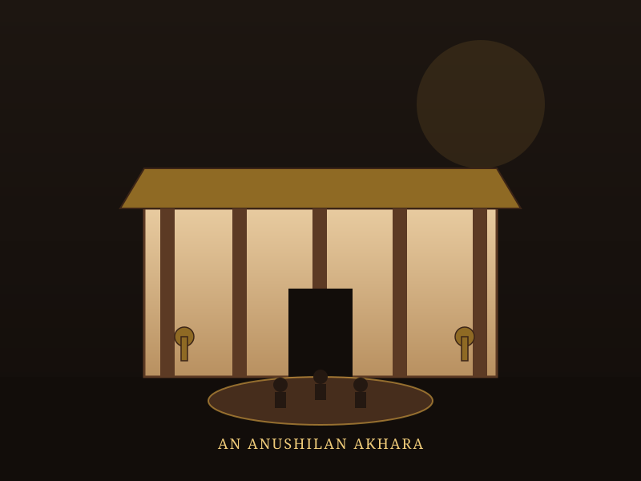
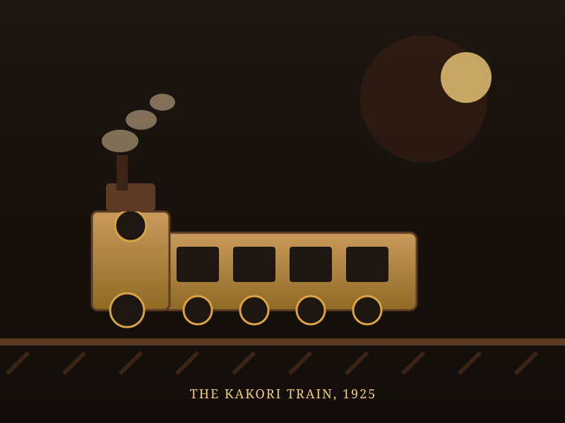

Young Resistance
Young people — students, graduates, and youth — were among the most dynamic forces in India's freedom struggle. From the anti-Partition protests of 1905 to the Quit India uprising of 1942, they organised boycotts, built secret networks, ran underground presses, and kept the flame of resistance alive in classrooms, streets, and prison cells.
How Students Shaped the Freedom Struggle
The story of India's freedom movement is inseparable from its students. The 1905 Partition protests mobilised university students in Calcutta, Bombay, and Madras on an unprecedented scale. The National Education Movement — born from the 1906 Benares Hindu University controversy and the 1916 sessions of the Indian National Congress — gave students and teachers a vision of self-reliant learning as political action.
Young revolutionaries like Aurobindo Ghosh, Bhupendranath Dutta, and later Bhagat Singh, Chandrashekhar Azad, and Ram Prasad Bismil were products of the colonial education system they ultimately rejected. Student chapters of the Congress, the Muslim League, and the Hindu Mahasabha became platforms for organising protests, spinning sessions, and literacy drives. During Quit India in 1942, college campuses became centres of underground activity — leaflets were printed in hostels, meetings held in libraries, and arrests swept through university corridors.
🎓 At a Glance
- Young leaders: Aurobindo Ghosh, Bhagat Singh, Bismil, Sukhdev, Khudiram Bose, and thousands more.
- Movements: Anti-Partition (1905), Swadeshi, National Education, Non-Cooperation, Quit India.
- Organisation types: University unions, student clubs, revolutionary societies, underground presses.
- Key institutions: Presidency College, Aligarh, BHU, Fergusson College, SC College, and dozens of others.
Student Resistance Map
Select a movement to trace student activism across educational institutions and protest cities. Select "All" to see the full map.
Showing all student resistance locations across India. Click a node for details.
Movements Led by Students & Youth
Young people didn't just participate — they often led. Explore the movements where student energy, idealism, and courage changed the course of history.
Anti-Partition & Swadeshi (1905)
1905 · BengalUniversity students in Calcutta, Bombay, and Madras organised the first mass anti-British protests, boycotting government institutions and promoting swadeshi goods. The movement gave birth to secret revolutionary societies like Anushilan Samiti.
National Education Movement (1906–1920s)
1906 · BenaresBorn from the BHU controversy, the movement promoted indigenous education as political resistance. Students and teachers founded national schools, promoted Hindi learning, and linked classrooms to the freedom struggle.
Non-Cooperation (1920–1922)
1920 · NationwideYoung lawyers, students, and graduates left government colleges and courts. University unions organised picketing sessions and protests. Thousands of students were expelled for refusing to attend classes under British rule.
Young Revolutionaries (1905–1930s)
1905–1931 · Bengal to PunjabYoung men and women abandoned peaceful protest for armed resistance. From Aurobindo Ghosh to Bhagat Singh, Chandrashekhar Azad to Khudiram Bose — they formed secret societies, ran underground presses, and paid with their lives.
Quit India Movement (1942)
1942 · NationwideStudents were on the frontlines. College hostels became printing presses, libraries hosted secret meetings, and protest marches drew thousands. Arrests swept through campuses — from Delhi University to Patna College.
Young Leaders of the Resistance
From revolutionary firebrands to student organisers, these young leaders turned classrooms into battlegrounds for freedom.
Shyamji Krishna Varma
Revolutionary · 1857–1914Ex-student of Bombay University who founded the revolutionary journal Free Hindustan in London and established the Home Rule Society to train young Indians in the art of revolution.
Aurobindo Ghosh
Revolutionary · 1872–1950Exalumnus of Presidency College and a student of classical languages at Cambridge. Founded the secret Anushilan Samiti in 1902 and launched the Swadeshi agitation in Bengal.
Bhagat Singh
Revolutionary · 1907–1931A university student in Lahore, Singh joined the HSRA at 16. At 23, he became a symbol of youthful defiance — his trial speech "Mujhe Jooton Do, Pyare Desh" electrified a generation.
Khudiram Bose
Revolutionary · 1889–1908A teenage revolutionary who threw bombs at British officials in Marseilles at age 18, shouting "Bhawaro Jai Hindu" before being executed. The youngest martyr of the revolutionary movement.
Sukhdev Bhargav
Revolutionary · 1908–1931A law student and HSRA member, Bhargav was hanged at 23 alongside Bhagat Singh and Rajguru. His famous last words: "You can remove all my possessions, but I am a free man."
Aruna Asaf Ali
Freedom Fighter · 1906–1996A graduate of Delhi University, she went underground during Quit India and lit the banned Congress flag at the Gowalia Tank Maidan in Bombay at just 34 — a defining moment of the movement.
Timeline of Student & Youth Resistance
From the first student protests against the 1905 Partition to the final Quit India uprisings of 1942 — a chronology of youth-led action.
The Great Partition Protest
Students across Calcutta, Bombay, and Madras lead the first mass boycotts. University unions organise rallies, burning of foreign cloth, and picketing of shops selling British goods.
National Education Movement Launched
Following the Benares Hindu University controversy, students and teachers demand indigenous education. The movement links classrooms to anti-colonial resistance.
Young Blood at Virram
Khudiram Bose, just 18, throws a bomb at King Curzon's procession in Marseilles. Captured and executed at 19, he becomes the young face of revolutionary resistance.
Student Non-Cooperation
Mass student resignations sweep across Indian Universities. College unions organise picketing, swaraj flag hoisting, and anti-government protests. Thousands are expelled.
Revolutionary Trials
Young revolutionaries like Bhagat Singh, Sukhdev, and Rajguru are tried for the killing of police Inspector Saunders. Their trial rooms become forums of nationalist fire.
Quit India Student Uprising
College campuses across India erupt in protest. Students print underground newsletters, organise silent processions, and face mass arrests. Delhi University, Patna College, and Fergusson College lead the charge.
Educational Institutions in the Struggle
From colonial classrooms to centres of resistance — the institutions where young minds became engines of change.
Presidency College, Calcutta
Where Aurobindo Ghosh studied, and where 1905 Partition protests first took root among students. The college union became a hotbed of revolutionary thinking.
Benares Hindu University
Founded in 1916 amid the national education movement, BHU became a centre of student activism under leaders who linked learning to liberation.
Aligarh Muslim University
Founded by Sir Syed Ahmad Ali, AMU students were deeply involved in both non-cooperation and revolutionary activities. The campus hosted secret political meetings.
Fergusson College, Pune
A breeding ground for revolutionary youth. Students here organised the 1905 boycott, joined the Ghadar Party abroad, and led Quit India protests on campus.
Delhi University
Students here were at the forefront of Quit India. The university's Student Federation became a key organising body, with mass arrests in 1942.
Salt College, Chennai
Madras Presidency College students organised the 1905 boycott in the south. The campus produced several revolutionary figures and student leaders.
Impressions of Student Resistance
Illustrated scenes from campus protests, secret meetings, and revolutionary gatherings — the faces and places of youth defiance.



📚 References & Further Reading
- Sir Syed Ahmad Ali. Aligarh Movement and the Rise of Muslim Modernist Education.
- Wikipedia. Student Participation in the Indian Independence Movement.
- Wikipedia. Swadeshi Movement (1905).
- Wikipedia. National Education Movement.
- Wikipedia. Quit India Movement.
- Wikipedia. Revolutionary Movements in India.
- Sri Aurobindo. Sri Aurobindo — Revolutionary and Philosopher.